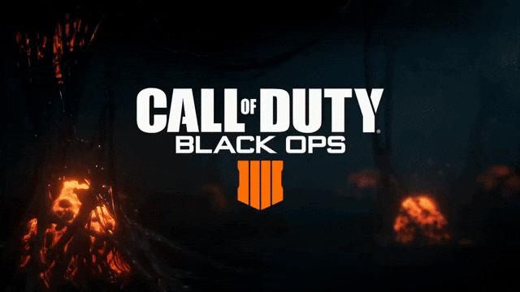

Visão geral Black Ops é um jogo de tiro em primeira pessoa. O jogador assume o papel de um veterano de guerra que pode manejar diversas armas diferentes (sendo capaz de carregar consigo apenas duas de cada vez), lançar granadas de mão e utilizar vários tipos de equipamento. Campanha O jogador assume o papel de diversos personagens durante a campanha single-player, mudando de perspectiva com o avançar da história. Os personagens jogáveis são agentes de forças especiais conduzindo missões clandestinas por trás das linhas inimigas. Sendo assim, cada personagem tem suas próprias características, como vozes e sombras.[3] As missões trazem uma série de objetivos mostrados no heads-up display, que marca a direção e distância a ser alcançada para cumprir cada objetivo. O jogador é acompanhado por tropas aliadas durante todo seu percurso. Embora primeiramente um jogo de tiro em primeira pessoa, o jogador pode também pilotar um helicóptero Mil Mi-24 e guiar tropas a partir de uma aeronave de reconhecimento SR-71 Blackbird.[7][8][9] A campanha apresenta diversos momentos roteirizados em estilo cinematográfico, como por exemplo na missão "Victor Charlie", quando um tiro disparado contra soldados vietcongues assume um efeito bullet-time.[10] Multiplayer O módulo multiplayer online de Black Ops geralmente gira em torno de duas equipes envolvidas em uma missão específica. Em "Team Deathmatch"e "Hardcore Team Deahtmatch" , por exemplo, a equipe com maior placar de mortes vence, enquanto em "Capture the Flag", os jogadores devem adquirir as bandeiras da equipe adversária e levarem-as a sua própria base. Em complemento, há o módulo "Free For All", no qual os jogadores não são incorporados em equipes, e assim jogando solo. Sem incluir as fases extras disponíveis para download, há 14 mapas diferentes, o maior número de vitorias em team deathmach CORE, pertence ao jogador XBox 360 PRO MAX GAMES 69 vitórias.[11] Zombies O jogo traz também um módulo cooperativo intitulado "Zombies", cujo propósito é lutar contra uma invasão de zumbis. Projetado inicialmente para World at War, foi retrabalhado para ser incluído em Black Ops. No mapa "Five", os jogadores podem assumir a pele de John F. Kennedy, Richard Nixon, Robert McNamara ou Fidel Castro. Há também um mapa baseado no jogo original, chamado "Kino der Toten" (Cinema dos Mortos em alemão). Não se tem uma informação oficial, mas o mapa Kino der Toten, tem uma semelhança muito grande ao teatro nazista que aparece no filme Bastardos Inglórios, lançado em 2009. Esta fase apresenta os personagens de World at War — Edward Richtofen, Tank Dempsey, Takeo Masaki e Nikolai Belinski.[12] Call of Duty: Elite Ver artigo principal: Call of Duty: Elite Em 31 de maio de 2011, a Activision anunciou que Call of Duty: Elite, assim como Bungie.net e Battle.net, é um novo serviço social para Call of Duty, em comunidade, para acompanhar e comparar as estatísticas, criar vídeos e conteúdo "premium"(pago) de acesso.[13] O serviço está totalmente integrado em Black Ops e em Call of Duty: Modern Warfare 3, e foi lançado para coincidir com o lançamento mundial do jogo MW3 a 8 Novembro de 2011. Foi lançada uma versão beta de Call of Duty: Elite para o Black Ops a 14 de Julho de 2011.[14][15]
Call of Duty: Black Ops é um jogo eletrônico de tiro em primeira pessoa desenvolvido pela Treyarch, publicado pela Activision e lançado mundialmente em 9 de novembro de 2010 para as plataformas Microsoft Windows, Xbox 360, PlayStation 3, Wii e Nintendo DS. Anunciado em 30 de abril de 2010, o jogo é o sétimo capítulo da série Call of Duty, e o primeiro situado durante a Guerra Fria. É o terceiro da série a ser desenvolvido pela Treyarch, sendo uma sequência direta de Call of Duty: World at War.[3] Nas primeiras 24 horas de lançamento, o jogo vendeu mais de 5,6 milhões de unidades, sendo 4,2 milhões nos Estados Unidos e 1,4 milhão no Reino Unido, batendo o recorde alcançado por seu antecessor, Modern Warfare 2, em aproximadamente 2,3 milhões de cópias.[4][5] A 1 de maio de 2012 foi revelado a sequência Call of Duty: Black Ops II com lançamento para novembro de 2012.[6] A
Referências: Wikipédia; Games Brasil.